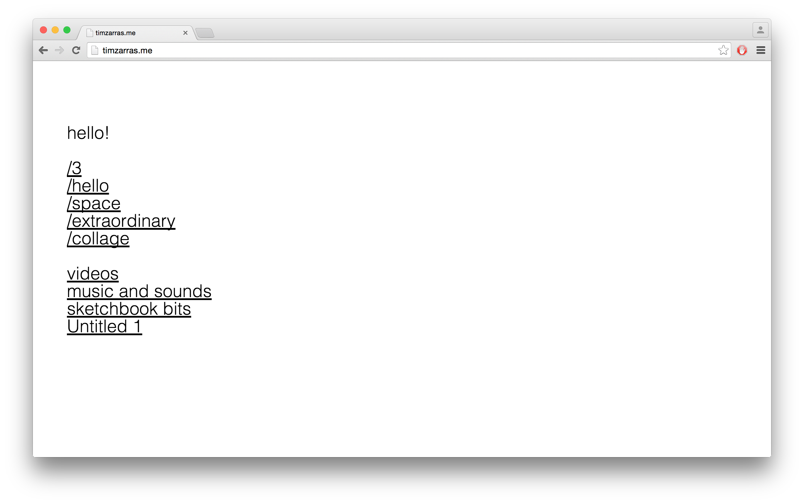
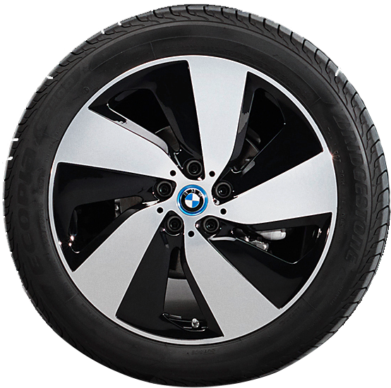
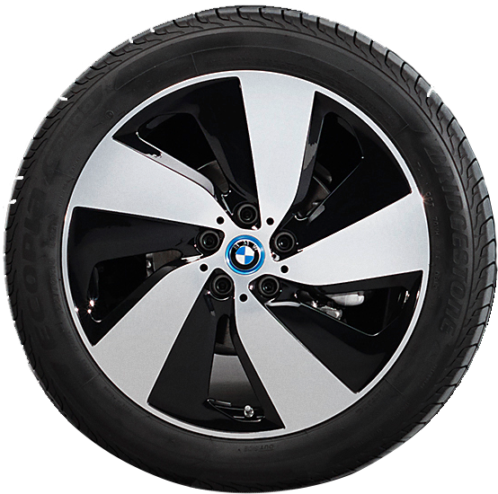
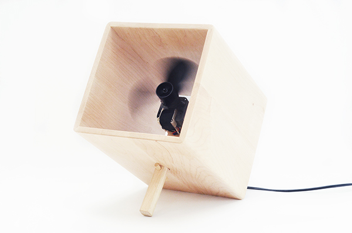
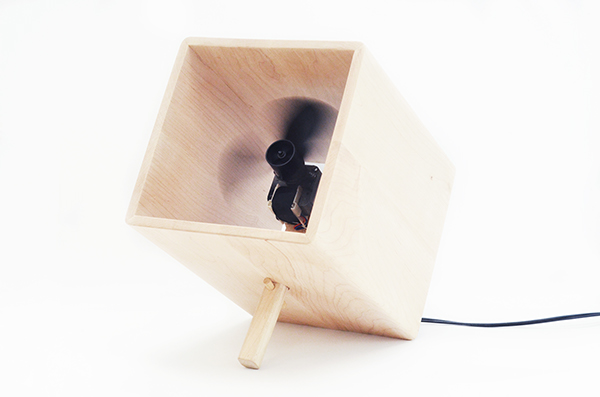

timzarras.me
Connection Study
Fan
About Me

Spring 2015
I set up timzarras.me to act as an online sketchbook for smaller, low stress web projects.
timzarras.me

My name is Tim Zarras.
I'm currently a senior in Furniture Design at the Rhode Island School of Design.
 



 
